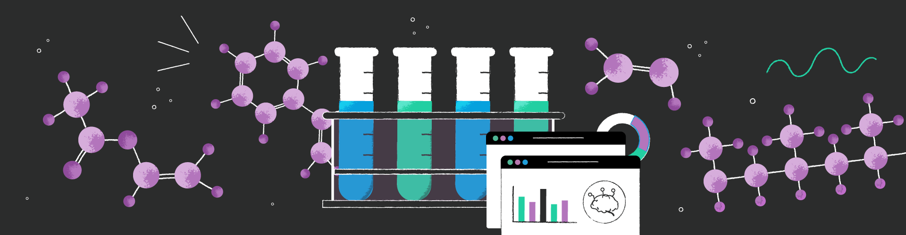
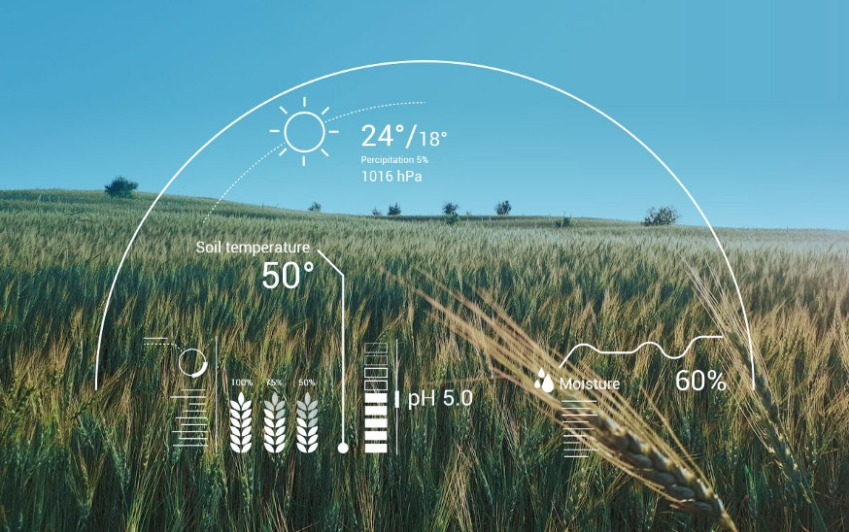

Drone Design Development
A beginner-level quadcopter with a lightweight drone frame and durable flying arms ensures stability and agility. High-performance motors and a perceptive flight controller provide smooth control. With seamless communication and room for customization, it offers an accessible entry into drone technology
Team Members:Shamika,Divya,Rutuja,Pranjal
Chemtech

About Project
This project entails compiling and collecting optimal levels of data sets from the Chemical and Petrochemical Industries within the country. The objective is to streamline decision-making processes and facilitate insight generation for strategic initiatives within the industry. By gathering comprehensive data sets at the optimum level, this endeavor seeks to enhance operational efficiency, promote informed decision-making, and drive strategic advancements in the Chemical and Petrochemical sectors.
Team Members:Shamika,Divya,Rohit,Akshat,Aaryan,Rashid
AgroTech Wizards

About Project
AI-driven agricultural software integrates a diverse range of algorithms and technologies to revolutionize farming practices. Leveraging remote sensing and GIS for crop monitoring, precision agriculture tools like Variable Rate Technology, and predictive models for crop growth and yield, this software enables advanced decision-making. Machine learning facilitates disease and pest detection, while computer vision automates harvesting processes. Additionally, data analytics aids in weather forecasting, irrigation management, supply chain optimization, and market analysis, enhancing agricultural efficiency, sustainability, and profitability. By harnessing data-driven insights and facilitating informed decision-making, AI-powered agricultural software paves the way for smarter equipment automation and transformative advancements in the agricultural industry.
Team Members:Shamika,Divya,Rohit,Akshat,Aaryan,Rashid